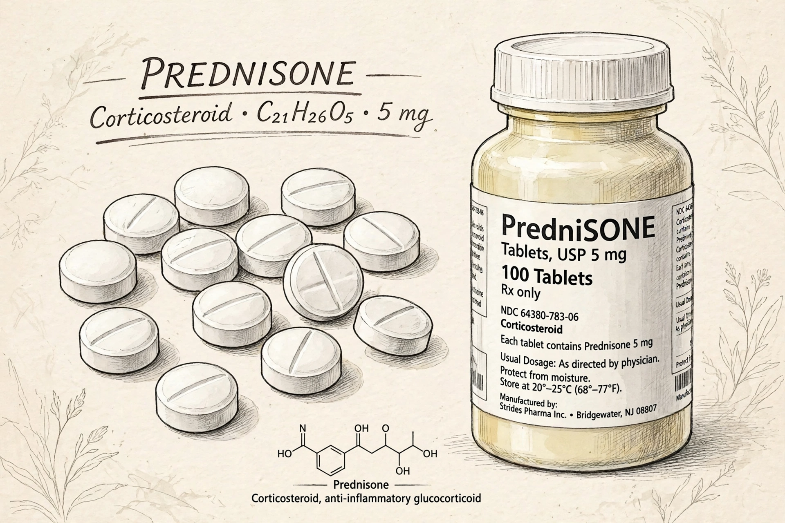

Prednisone is a glucocorticoid medication used to suppress the immune system and decrease inflammation in conditions such as asthma, allergies, and autoimmune diseases. It is a prodrug that is converted in the liver to prednisolone, the active form.

Prednisone is used for allergic disorders, skin diseases including dermatitis, ulcerative colitis, arthritis, lupus, psoriasis, respiratory disorders, eye inflammation, blood disorders, and as part of treatment after an organ transplant to prevent rejection. It may also be used with chemotherapy for certain cancers.
Short-term effects include nausea, increased appetite, insomnia, and mood changes. Long-term use can cause Cushing's syndrome, weight gain, osteoporosis, diabetes, high blood pressure, cataracts, and suppression of the adrenal glands, leading to adrenal insufficiency if stopped abruptly. Doses are therefore tapered.
Prednisone was synthesized in the mid-1950s, shortly after the clinical introduction of cortisone, whose developers shared the 1950 Nobel Prize in Physiology or Medicine. It was approved for medical use in the United States in 1955 and is on the WHO List of Essential Medicines.
Like other glucocorticoids related to dexamethasone, prednisolone binds glucocorticoid receptors, altering gene expression to reduce production of inflammatory mediators.